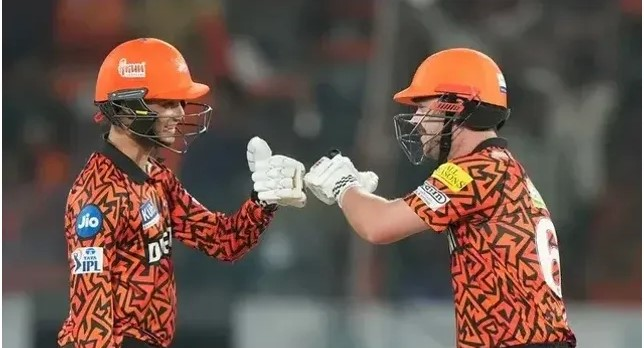

Category: Sports
Most Sixes in an IPL Match
In this article, most sixes in an IPL match, we have sorted the top five
IPL matches with the most sixes, where calculating the total sixes in a
match.
By: Uday Sharma | May 8, 2024, 9:00am IST | @blogdevs

While T20 cricket is popular for dominant batting performances, sixes or
over-boundaries play a crucial role in a team to add runs on the
scoreboard quickly. The Indian Premier League (IPL) is one of the most
famous and successful tournaments in T20 cricket history, where we have
experienced many big sixes. This article goes through the record for
most sixes in an IPL match.
5. Royal Challengers Bangalore vs Chennai Super Kings (2018): 33 Sixes
During the IPL 2018 Bengaluru match of RCB vs CSK, we experienced a high-scoring thriller with 33 sixes. While RCB scored 205/8 in 20 overs, CSK chased down the target in 19.4 overs after losing five wickets. After RCB batters smashed 16 sixes, CSK hit 17 sixes in their successful chase.
4. Rajasthan Royals vs Chennai Super Kings (2020): 33 Sixes
It was the IPL 2020 match of RR vs CSK at Sharjah. While Rajasthan Royals scored 216/7 in 20 overs, CSK only managed to score 200/6 in 20 overs. Rajasthan Royals hit 17 sixes and CSK batters smashed 16 over-boundaries, as the IPL match experienced a total of 33 sixes.
3. Royal Challengers Bengaluru vs Sunrisers Hyderabad (2024): 38 Sixes

The Bengaluru IPL 2024 match of RCB vs SRH experienced the highest IPL total (287/3) and highest match aggregate in T20 cricket history (549). After SRH set up the record IPL total of 287/3 with 22 sixes, RCB replied with 262/7 with 16 sixes. The match experienced 38 sixes.
2. Sunrisers Hyderabad vs Mumbai Indians (2024): 38 Sixes
The SRH vs MI IPL 2024 match at Hyderabad experienced 38 sixes. While SRH scored 277/3 in 20 overs, the then-highest IPL total, brave MI replied with 246/5 in 20 overs. SRH smashed 18 sixes in the first batting, and unlucky MI hit 20 sixes in the unsuccessful chasing.
1. Kolkata Knight Riders vs Punjab Kings (2024): 42 Sixes
The KKR vs PBKS IPL 2024 match at Kolkata experienced a high-scoring encounter, which had the second-highest T20 match aggregate (523), and the highest successful chase in T20 cricket history (262/2). While KKR scored 261/6 in 20 overs, PBKS chased down the target in 18.4 overs after losing two wickets. While KKR hit 18 sixes in the first innings of the match, PBKS smashed 24 sixes, as the match experienced a total of 42 sixes – the record number of sixes in an IPL match.